Next: Molecular Dynamics Simulation Up: Monte Carlo Simulation Previous: Case Study 3: Hard-Disk
The final case study we will consider in this unit on Monte Carlo simulation is the prototypical system for continuous-space, 3D liquids: The Lennard-Jones fluid. (This is detailed in Sec. 3.4, “Case Study 1” in Frenkel & Smit [1].) The primary objective of the MC code is to predict the pressure of a sample of Lennard-Jonesium at a given density and temperature; that is, we can use MC to map out (in principle) the phase diagram of a material. We will use this case study to introduce and discuss another important element of a large number of molecular simulations: periodic boundary conditions.
We would like to simulate bulk fluid. The apparently simplest way to approximate bulk behavior in a finite number of particles is to employ periodic boundaries. That is, we imagine the box of length 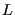 is embedded in an infinite space tiled with replicas of the central box. If we focus on the central box, and watch as one particle is displaced “out” of the box, it will reappear in the box at the opposite face. Moreover, particles interact with “images” of other particles in all replica boxes. Periodic boundaries thus allow us to mimic the infinite extent of bulk fluid.
|
|
Periodic boundaries require the use of the minimum image convention (MIC) when computing inter-particle contributions to the total energy. Below is a modified 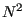 loop for a 3-D system of point particles obeying the Lennard-Jones pair potential with periodic boundaries. The function e_i() computes the sum of all pair interactions between a
stipulated particle i and all particles from i0 to N-1. It is called from total_e() such that a sum of pairwise energies for all unique pairs is computed.
double e_i ( int i, double * rx, double * ry, double * rz, int N,
double L, double rc2, int tailcorr, double ecor,
int shift, double ecut, double * vir, int i0 ) {
int j;
double dx, dy, dz, r2, r6i;
double e = 0.0, hL=L/2.0;
*vir=0.0;
for (j=i0;j<N;j++) {
if (i!=j) {
dx = rx[i]-rx[j];
dy = ry[i]-ry[j];
dz = rz[i]-rz[j];
if (dx>hL) dx-=L;
else if (dx<-hL) dx+=L;
if (dy>hL) dy-=L;
else if (dy<-hL) dy+=L;
if (dz>hL) dz-=L;
else if (dz<-hL) dz+=L;
r2 = dx*dx + dy*dy + dz*dz;
if (r2<rc2) {
r6i = 1.0/(r2*r2*r2);
e += 4*(r6i*r6i - r6i) - (shift?ecut:0.0);
*vir += 48*(r6i*r6i-0.5*r6i);
}
}
}
return e+(tailcorr?ecor:0.0);
}
double total_e ( double * rx, double * ry, double * rz,
int N, double L,
double rc2, int tailcorr, double ecor,
int shift, double ecut, double * vir ) {
int i;
double tvir;
double e = 0.0;
*vir=0.0;
for (i=0;i<N-1;i++) {
e += e_i(i,rx,ry,rz,N,L,rc2,
tailcorr,ecor,shift,ecut,&tvir,i+1);
*vir += tvir;
}
return e;
}
The function e_i() is also useful when determining whether or not to accept a trial displacement move, since the change in energy
associated with moving particle can be found by calling e_i() for particle before and after the move; the latter energy minus the former is
, since no other particles are displaced. This is much faster than just doing a full-blown calculation to evaluate each trial move, but it forces you to do careful accounting to keep the total energy up-to-date. If the move is accepted the total energy must be incremented by
; if the virial is also being tallied, the virial must also be similarly incremented by the change in the virial upon particle displacement.
Note that each - displacement component is subject to the MIC; if 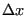 is greater than 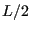, we subtract from it; if it is less than 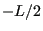, we add to it; same for 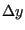 and 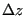. Many caveats come with using periodic boundaries. (A thorough discussion appears in Sec. 3.2.2 of F&S.) The first thing to realize is that the total potential per particle (as a sum of pair potentials) in principle diverges in an infinite periodic system. This can be circumvented by introducing a finite interaction range to the pair potential. We usually work with systems large enough such that the cutoff of the pair potential, 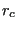, is less than one-half the box-length, , in a cubic box. This means that the “image” interactions involve only immediately neighboring replicas.
Truncation of a pair potential is an important idea to understand. The major point is that the cutoff must be spherically symmetric; that is, we can't simply cut off interactions beyond a box length in each direction, because this results in a directional bias in the interaction range of the potential. So, a hard cutoff radius is required, and it should be less than half the box length. The secondary point is that, once is chosen, if you wish to mimic a potential with infinite range, you must use the correction terms for energy and pressure described below.
The system we consider is made of 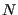 particles which interact via the
Lennard-Jones pair potential (Eq. 89). The particles are
confined in a cubic box with side-length . Length is measured in
units of 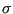 and energy in 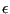, and we consider particles
with 1 diameters. A code is provided for simulating this
system using Metropolis Monte Carlo: mclj.c). mjlc.c will compute the
pressure given a temperature and density in the manner discussed in
the text. If a cutoff radius is chosen by the user, then a truncated and shifted pair potential is used, and the following
tail corrections are applied:
| 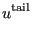 | 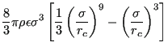 | (98) | |
| 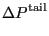 | 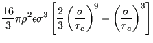 | (99) |
The pressure is computed from
| 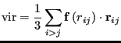 | (101) |
| 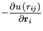 | (102) | ||
| 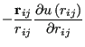 | (103) |
| 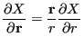 | (104) |
| 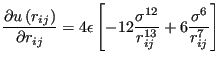 | (105) |
| 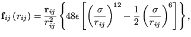 | (106) |
| 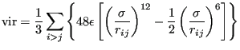 | (107) |
If you read the code mclj.c, you should see that the
initialization of positions is accomplished by putting the particles
on cubic lattice sites such that an overall density is achieved. It
is therefore convenient to run simulations with numbers of particles
that are perfect cubes, such as 128, 216, 512, etc, so that the
initial state uniformly fills the box.
Another consideration is that a certain number of cycles should be
“burned” prior to gathering statistics so this initial state is
fully erased. The flag -ne allows the user to specify how
many equilibration cycles are to be performed before switching to
“production” mode.
Fig. 12 shows two snapshots made with VMD of the Lennard-Jones systems with 512 particles.
|
|
As a suggested exercise, you can use mclj.c to try to reproduce
Figure 3.5 in F&S, which shows 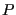 vs. at both 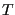 = 2.0 and
= 0.9. How many cycles do you need? How many equilibration
cycles? What maximum displacement did you choose?
Below are some of my preliminary results using the code mclj.c.
I used only 5,000 cycles for 512 particles for each point, and each
point is the result of a single run. These numbers appear to compare
well with those in Figure 3.5 in F&S, for which we have no idea how
many cycles or independent runs were performed.
|
|